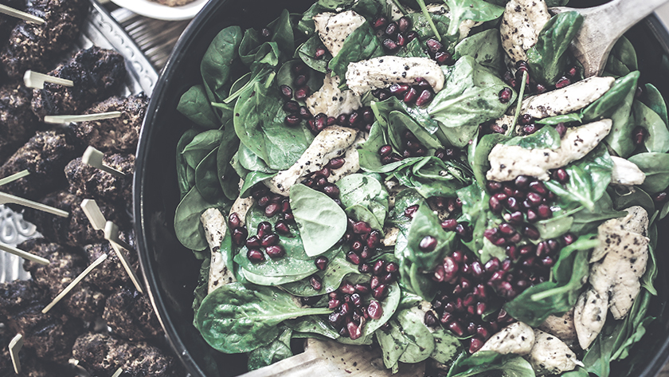
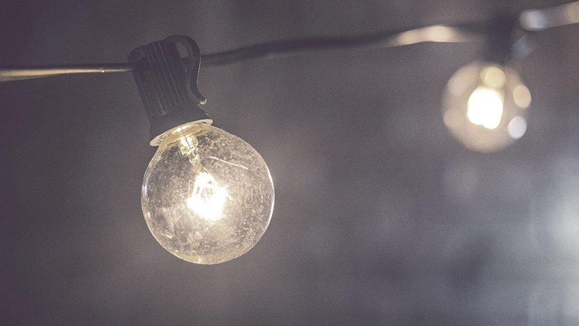

{{> partials/head }}
{{> partials/header-topics }}

<main class="wrapper container-fluid">
  <div class="cover cover--lime cover--short">
    <div class="cover__image-container">
      
    </div>
    <div class="cover__box">
      <div class="cover__text">
        <div class="cover__pretitle">FLIS topics</div>
        <h2 class="cover__title">Food<br />story</h2>
        <i class="cover__icon icon icon--cutlery"></i>
      </div>
      <a href="#" class="btn">Find out more</a>
    </div>
  </div>

  <div class="layout--white">
    <div class="block block--title-decoration">
      <h2 class="block__title">Where does your<br />food come from?</h2>
      <div class="block__content">
        <div class="narrow-container">
          <h3>Where does your food come from?<br />Understanding food supply</h3>
          <p>Europe has a topography and climate that varies quite a bit from country to country, and so it is able to produce a wide variety of agricultural products.</p>
        </div>
        
        <br /><br />
        <div class="narrow-container">
          <h3>PIC. Net trade flows in soybean, meat and dairy products<br />between the EU-27 and other world regions, 2012</h3>
          <p> In addition, modern farming techniques such as the use of single crops, irrigation, nutrients, pesticides and fertilisers have increased production, allowing Europe to become the second largest exporter of food in the world, particularly processed food. But Europe is also the world’s biggest importer of food, with imports outnumbering exports by a factor of 1.2. While staples such as meat, dairy and cereals are produced here, Europeans import fodder for animals and a number of food products such as fruit, vegetables, fish, shellfish, coffee and tea. We also import products that are then processed for export, thus adding value.</p>
          <p>Agriculture accounts for 36% of total water use* annually and this goes up to about 60% in the summer. Importing food products means that some of the pressure on our water resources has been exported to other countries. Yet as global populations grow** and become more urbanised*** there is the possibility that Europe will have to become more self-reliant and import less food, which will mean increased pressure on water resources.</p>
          <hr />
          <ol>
            <li><strong>Graph:</strong>Environmental Indicator Report 2014, p. 61 (also include the primary source listed at the bottom of the graph)<br /></li>
            <li><strong>Environmental Indicator Report 2014, p. 37</strong></li>
          </ol>
        </div>
      </div>
    </div>
  </div>

  <div class="page-switch">
    <div class="page-switch__prev">
      <div class="page-switch__label">Previous:</div>
      <a href="#" class="page-switch__link">Table of contents</a>
    </div>
    <div class="page-switch__current">
      <div class="page-switch__label">Current:</div>
      Where does your food come from? Understanding food supply
    </div>
    <div class="page-switch__next">
      <div class="page-switch__label">Next:</div>
      <a href="#" class="page-switch__link">Where does your food go to? Understanding food demand</a>
    </div>
  </div>

  <div class="layout--default">
    <div class="block">
      <h2 class="block__title">Related stories</h2>
      <div class="block__content">
        <a href="#" class="topics-item topics-item--black topics-item--big">
          
          <div class="topics-item__hexagon"></div>
          <h3 class="topics-item__title">Resources nexus</h3>
        </a>
        <a href="#" class="topics-item topics-item--orange topics-item--big">
          
          <div class="topics-item__hexagon"></div>
          <h3 class="topics-item__title">Energy</h3>
        </a>
        <a href="#" class="topics-item topics-item--aqua topics-item--big">
          
          <div class="topics-item__hexagon"></div>
          <h3 class="topics-item__title">Water</h3>
        </a>
        <div class="clearfix"></div>
        <div class="text-center">
          <a href="#" class="btn">All of stories</a>
        </div>
      </div>
    </div>
  </div>
</main>

<div class="designs designs--topics-food-story"></div>

{{> partials/footer }}
{{> partials/scripts }}
